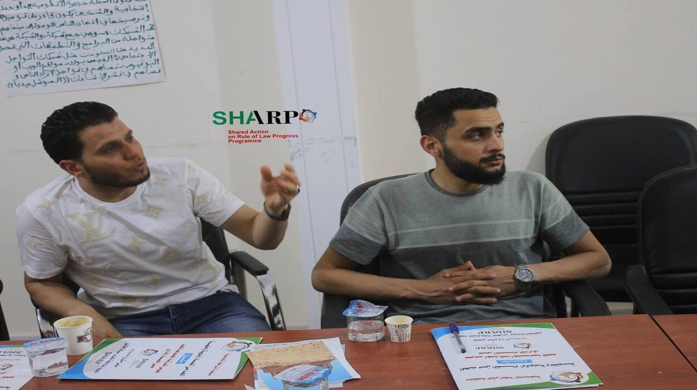
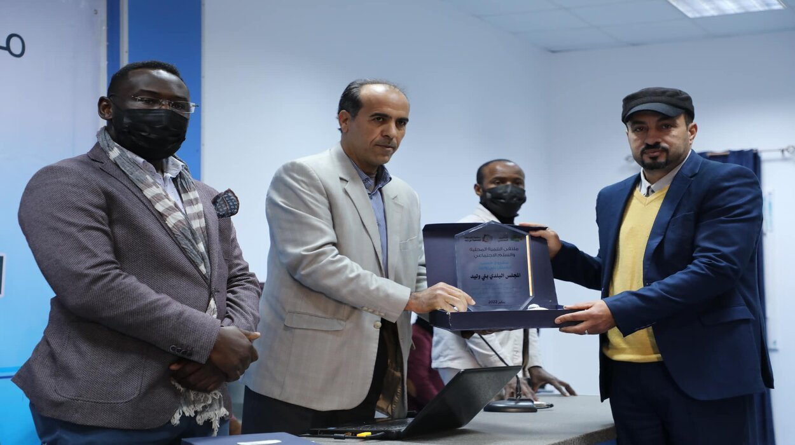
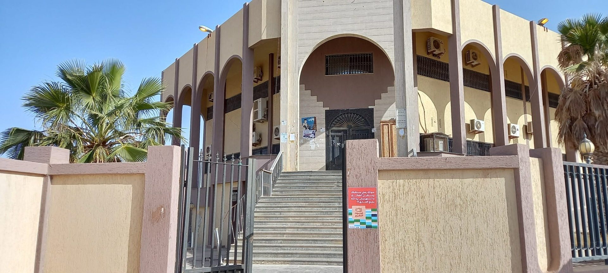
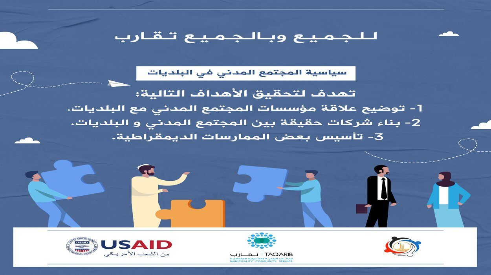

دور المجتمع المدني في تعزيز الحوكمة المحلية
تحليل لدور منظمات المجتمع المدني في تعزيز الشفافية والمساءلة على المستوى المحلي في ليبيا.
اقرأ المقال ←مقالات وتحليلات معمّقة حول قضايا المجتمع والتنمية والمشاركة المدنية في ليبيا
تحليل لدور منظمات المجتمع المدني في تعزيز الشفافية والمساءلة على المستوى المحلي في ليبيا.
اقرأ المقال ←
مقالة تُلقي الضوء على أهمية سيادة القانون في بناء دولة ديمقراطية مستقرة في ليبيا.
اقرأ المقال ←
كيف تُسهم حملات المناصرة المجتمعية في الحد من ظاهرة الفساد الإداري وتعزيز الشفافية.
اقرأ المقال ←
منهجية التخطيط من القاعدة إلى القمة وكيف تُحقق نتائج تنموية فاعلة ومستدامة.
اقرأ المقال ←
عرض لسياسة المجتمع المدني الليبية وأهمية تطبيقها على المستوى البلدي والمحلي.
اقرأ المقال ←
المرأة الليبية وإسهاماتها في بناء السلم المجتمعي وتحقيق التنمية الشاملة.
اقرأ المقال ←شركاؤنا وداعمونا